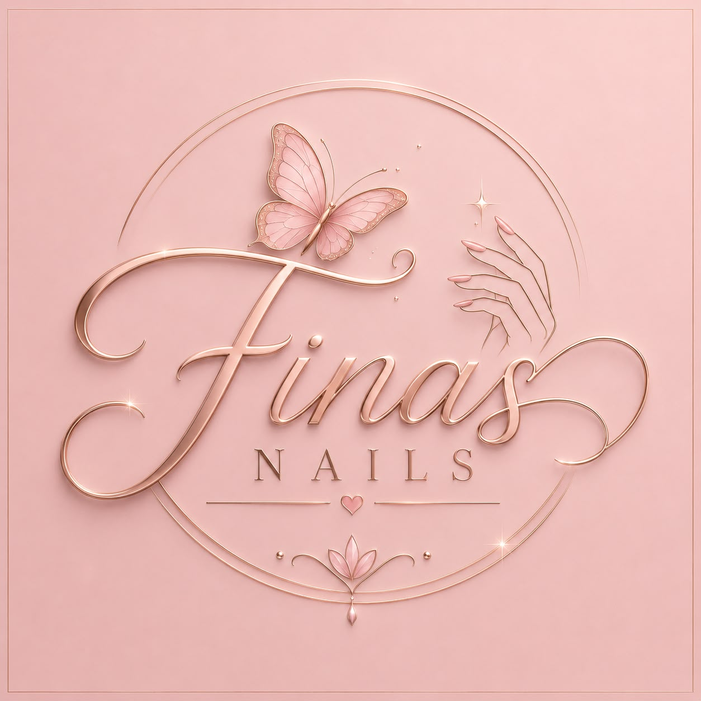

Tus manos, tu estilo
Manicure, pedicure y diseños para ti
Descubre la experiencia de lucir unas uñas elegantes, cuidadas y con los mejores diseños personalizados.

¿Por qué elegir Finas Nails?
- Atención 100% personalizada.
- Esterilización y máxima higiene en cada herramienta.
- Esmaltes y productos de alta calidad y larga duración.
Demostraciones
Algunas ideas para inspirar tu próximo diseño.